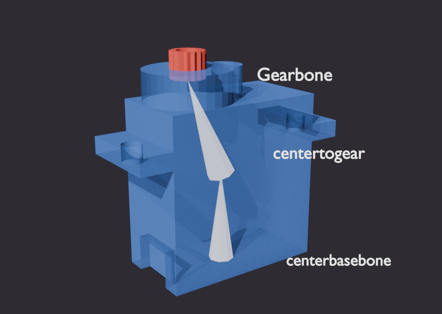
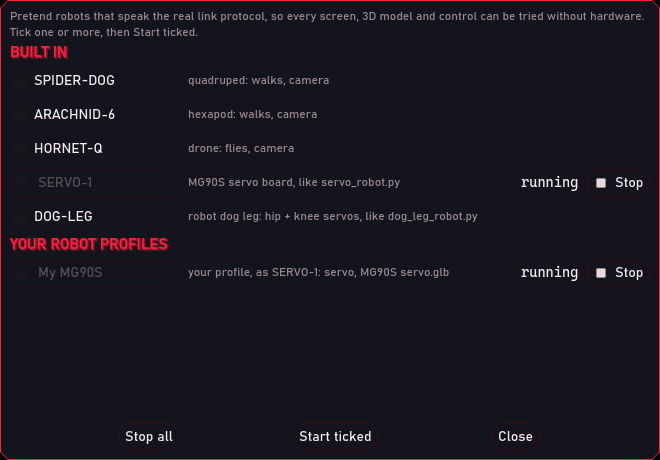
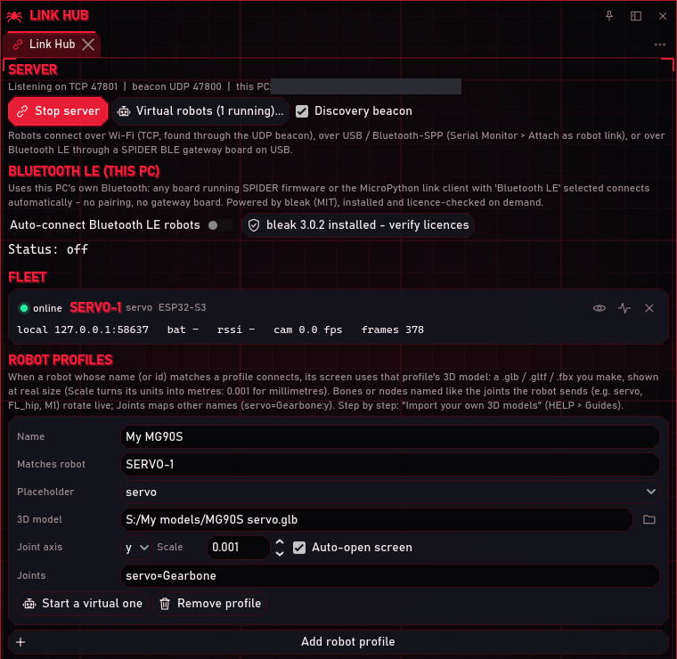
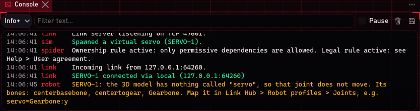
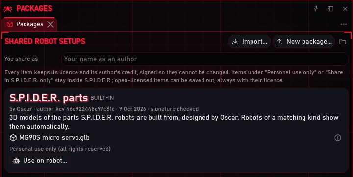

Every robot screen in S.P.I.D.E.R. has a 3D twin: a 3D model of the robot that moves the way the real one moves. Out of the box the twin is a built-in model (the MG90S servo) or a simple placeholder. This guide shows how to use your own model instead: how to prepare it in Blender so its moving parts move, export it, connect it to your robot in S.P.I.D.E.R., and share it with others.
The example is the MG90S micro servo from the ESP32-S3 servo tutorial, modelled in
Blender in millimetres with a bone that turns its output gear. Everything here was run on 2026-10-09 with
S.P.I.D.E.R.'s virtual servo (Tools > Virtual robots..., SERVO-1), which sends the same joint as the real board.
Network addresses are blacked out in the screenshots.
1. How the 3D twin works
- Real size. The twin's world is in metres: 1 unit = 1 m, and the grid shows 1 m, 10 cm, 1 cm and 1 mm squares as you zoom in. The corner of the twin shows the model's size, so you can check it against the real part.
- Joints. A robot sends the angle of each of its moving parts as a joint: a name and an angle in radians.
The servo robot sends one joint,
servo(0 = centred). The twin turns the bone or object in your model that has the same name, or the one you map to it (step 6). Your robot's script decides the names: in MicroPython it is thejoints()function inrobot.py. - Position. Robots that move around also send where they are and which way they face; the whole model follows. Your model stands on the grid by itself (its lowest point at height 0), and its front should face the way the robot drives (step 5).
| Robot | Joints it sends |
|---|---|
Servo (servo_robot.py, virtual servo) |
servo |
| Virtual quadruped (SPIDER-DOG) | FL_hip, FL_knee, FR_hip, FR_knee, RL_hip, RL_knee, RR_hip, RR_knee |
| Virtual hexapod (ARACHNID-6) | L1_coxa, L1_femur, L1_tibia ... R3_coxa, R3_femur, R3_tibia |
| Virtual drone (HORNET-Q) | M1 to M4 (the propellers) |
| Your own robot | whatever its script sends |
2. Model at real size
Model the part at its real size, in whatever unit is comfortable:
- Millimetres (best for small parts): Scene Properties > Units: Unit System Metric, Unit Scale 0.001, Length Millimeters. Then 1 Blender unit is 1 mm, and you type sizes straight from the datasheet. In S.P.I.D.E.R. you will set Scale 0.001.
- Metres (Blender's default): leave the units alone and set Scale 1 in S.P.I.D.E.R.
Apply the scale of your objects before you add bones (Object > Apply > Scale), so 1 unit really is 1 unit.
3. Make the moving parts move
There are two ways. Use bones for anything that bends or for a part inside one mesh; use separate objects for simple models.
With bones (an armature), as in the servo:
- Add an Armature. Give it a root bone for everything that stays still (the servo's body).
- Add one bone per moving part, with its head on the pivot (the servo's
Gearbonesits on the output shaft and points up along it). The bone turns about its own axis; for a bone that points along the shaft, that is Y. - Parent the meshes to the armature (Ctrl+P > With Empty Groups or With Automatic Weights), then weight them: the moving part 100 % to its bone, everything that stays still 100 % to the root bone. In Weight Paint mode the moving part should be all red for its bone and blue everywhere else.

- Test it before you export: in Pose Mode, select the moving part's bone and rotate it (R, then the axis key, e.g. R Y 90). Only the moving part may turn. If part of the body bends with it, that part still has weight on the bone: select those vertices in Edit Mode and set their weight for that bone to 0 (Object Data Properties > Vertex Groups, Remove from that group). Press Alt+R to put the bone back.
With separate objects: make each moving part its own object, put its origin on the pivot
(Object > Set Origin > Origin to 3D Cursor with the cursor on the pivot) and parent it to the part it hangs
from. Name each moving object like the joint (servo, FL_hip ...) or map it in step 6. Objects turn about their
own axis: pick it in step 6.
Name bones and objects without spaces. You do not have to name them like the joints: step 6 maps names.
4. Colours and textures that survive export
The export format (glTF) carries simple materials only. For each material, in the Principled BSDF:
- Base Color: a plain colour, or one Image Texture plugged straight in. Metallic, Roughness and a Normal Map carry over too.
- Mix nodes, Color Ramps, procedural textures (Noise, Wave ...) do not export. A common case: a label image with a transparent background mixed over a body colour by its alpha. The export keeps only the image, and the transparent parts come out in whatever colour is hidden under the transparency (often white). Fix it by filling the image's transparent background with the body colour in an image editor, or bake the material to one image (Cycles > Bake > Diffuse, colour only).
5. Export from Blender
- Face the front the right way: the side of the robot that faces you in Front view (numpad 1) is its front: it faces the way the robot drives.
- Select the armature (or the top object) and everything parented to it: right-click it in the Outliner > Select Hierarchy.
- File > Export > glTF 2.0 (.glb/.gltf), with: - Format: glTF Binary (.glb): one file, textures inside. - Include: Selected Objects. - Transform: +Y Up (on). - Data > Armature and Skinning: on (for bones). Animation: off (S.P.I.D.E.R. moves the bones itself). - Material: Export; Images: Automatic.
- Save it next to your robot's code, e.g.
My models/MG90S servo.glb.
S.P.I.D.E.R. also opens .gltf (keep its texture files next to it) and .fbx.
6. Give the model to your robot
Open Link Hub (VIEW > Link Hub) and scroll to Robot profiles. Press Add robot profile and fill it in:
| Field | Servo example | What it means |
|---|---|---|
| Name | My MG90S |
A name for you. |
| Matches robot | SPIDER-SERVO (SERVO-1 for the virtual servo) |
The name (or id) the robot sends. The profile is used when that robot connects. |
| Placeholder | servo |
What the twin shows while there is no model of your own (the built-in MG90S for servo). |
| 3D model | My models/MG90S servo.glb |
Your file. Press the folder button to pick it. |
| Joint axis | y |
The axis the bones or objects turn about. |
| Scale | 0.001 |
Your model's unit in metres: 0.001 for millimetres, 1 for metres. |
| Joints | servo=Gearbone |
Optional. Which bone each joint turns: joint=bone. Add :x, :y, :z (or :-y to turn the other way) to give one bone its own axis, and separate several with ;, e.g. FL_hip=HipL:x; FL_knee=KneeL:x. Leave it empty if your bones are named like the joints. |
Changes apply at once: an open robot screen reloads the model.
No hardware yet? Press Start a virtual one on the profile. A pretend robot connects under the profile's Matches robot name, so its screen uses this profile's model, scale and joints. Servo, dog leg, hexapod and drone profiles move like their own kind; any other kind (a rover, an arm) walks like the quadruped for now. Tools > Virtual robots... lists every built-in robot and one per profile, to start several at once.


7. Check it
Connect the robot, or start its virtual one (above). Its robot screen opens with your model in the TWIN view:
- Drag to orbit, scroll to zoom, F to stop or start following the robot.
- The corner shows the model's size (here 12.3 × 30.9 × 32.3 mm: thickness, height with the gear, length across the mounting tabs) and the grid squares in view. Compare it with the real part; if it is 1000 times too big or small, fix Scale.
- Move the robot (the servo screen's 0 / 90 / 180 or Sweep): only the moving part should turn, about the right axis.

If a joint finds nothing to turn, the Console says so once and lists the model's bones, with the line to type into Joints:

8. Share it, or use someone else's
Models travel in .spider packages (VIEW > Packages), each with its own licence:
- Share yours: New package... > 3D model... (or Robot setup..., which takes the robot profile, its model and its Control Deck together). Pick a licence. Under Personal use only or Share in S.P.I.D.E.R. only the model stays encrypted inside S.P.I.D.E.R.: people can use it, but cannot take the file out. Open licences (Creative Commons) can be saved out, always with their licence and credit.
- Use someone else's: Import... their
.spiderfile. S.P.I.D.E.R. checks its signature and licences. A model then offers Use on robot..., which puts it in a robot profile for you; a robot setup offers Add robot profile.

Only share models you made or have the right to share. New package... explains each licence when you pick it.
Troubleshooting
| Symptom | Fix |
|---|---|
| The twin still shows the placeholder | The Console says why (file not found, could not load). Check the 3D model path and that Matches robot is exactly the name the robot sends (Link Hub > Fleet shows it). |
| Tiny or huge, or no model in view | Scale: 0.001 for a model made in millimetres, 1 for metres. The corner readout shows the size S.P.I.D.E.R. sees. |
| Lying on its side or upside down | Export with +Y Up on, and apply rotation in Blender (Object > Apply > Rotation) before rigging. |
| Faces the wrong way when it drives | Its front must face you in Blender's Front view (numpad 1). Rotate the whole model, apply rotation, export again. |
| Nothing moves | The Console names the joints that found nothing and the model's bones: map them in Joints (step 6). Check that the export had Armature and Skinning on. |
| The wrong part moves, or the body bends | Weights (step 3): the moving part 100 % to its bone, the rest 0 % to it. Test in Pose Mode before exporting. |
| Turns about the wrong axis | Change Joint axis, or give that joint its own axis in Joints (servo=Gearbone:z). |
| Turns the wrong way | Put a minus on the axis: servo=Gearbone:-y. |
| Colours differ from Blender | Mix nodes and procedural textures do not export (step 4). The twin uses the same colour transform as Blender (AgX) and neutral light, so a correctly exported material looks the same. |
| Textures missing (.gltf) | Keep the texture files next to the .gltf, or export as .glb, which carries them inside. |